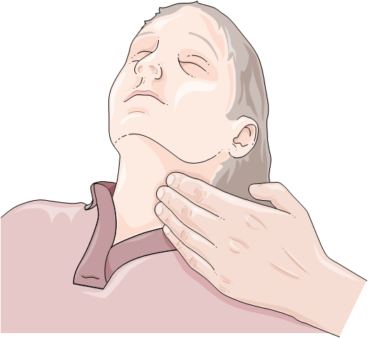
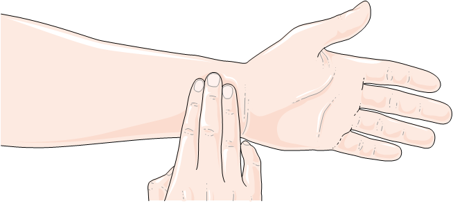

La victime est inconsciente et on veut savoir si son coeur bat en prenant son pouls. La prise du pouls permet de vérifier l'état de la victime et une éventuelle anomalie cardiaque qui est un facteur de risque d'un AVC. On peut prendre : Le pouls carotidien en posant les doigts au niveau du cou. Le pouls radial en posant les doigts au creu du poignet au niveau du bracelet-montre.
Procédure  